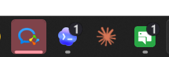
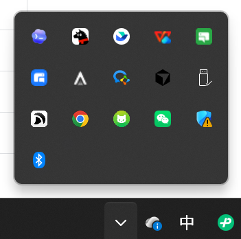
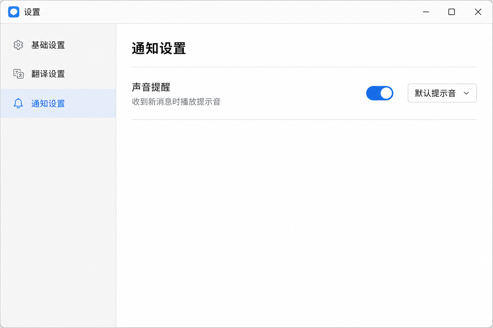
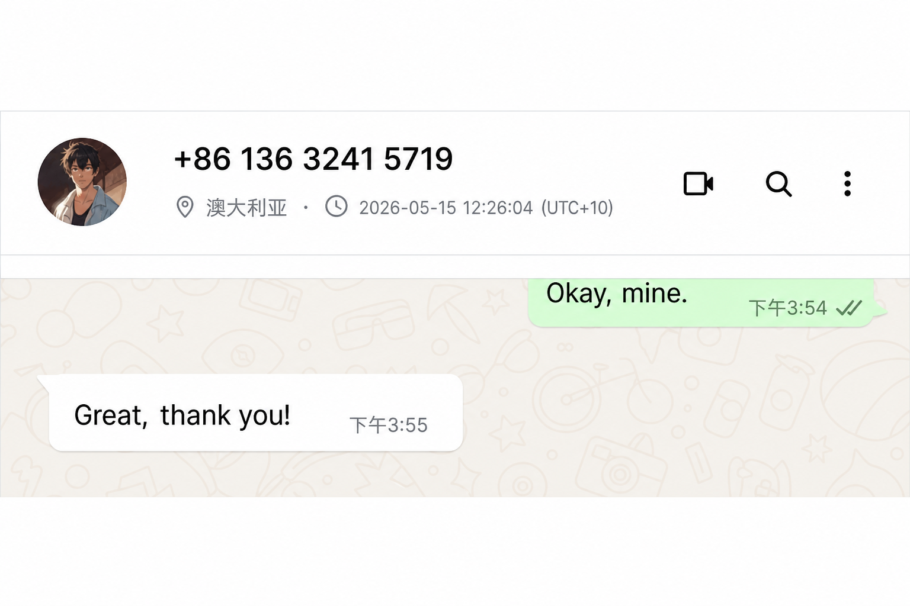
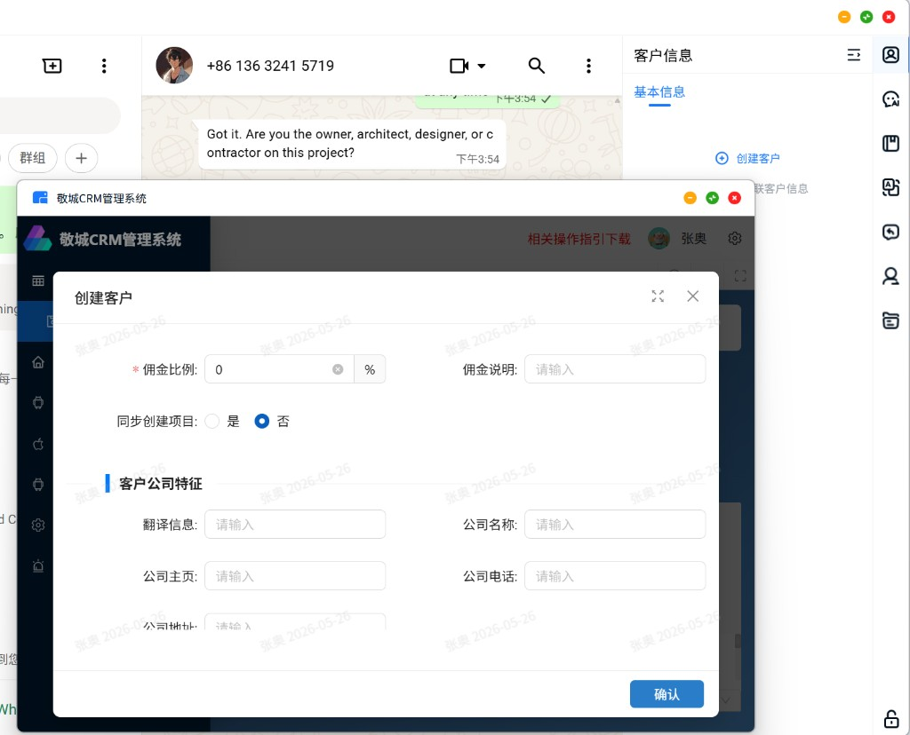
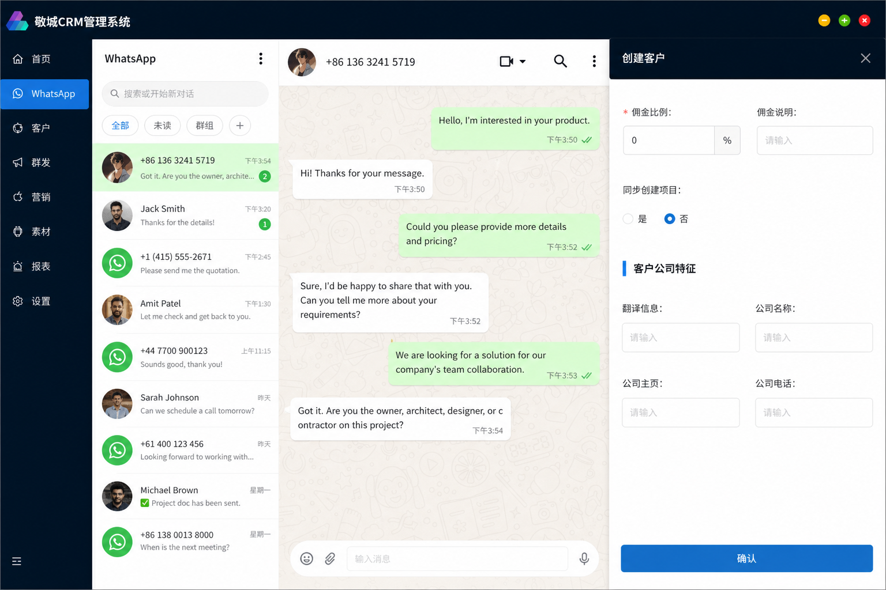
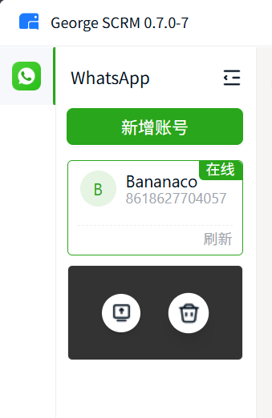

SCRM 2.0 · 会话工作台体验完善
功能需求文档 V0.1
版本记录
| 版本 | 日期 | 需求范围 | 产品 |
|---|---|---|---|
| V0.1 | 2026-05-21 | 消息通知、客户时区、三方系统交互、多账号登录 | 张奥 |
背景说明
SCRM 2.0 聚焦会话工作台的基础功能修复与体验完善。本文档覆盖四个功能模块：消息通知增强、客户当地时间展示、三方系统内嵌交互、多账号登录管理。另有翻译功能、内核更换、UI 升级等内容与本期需求一同打包发布，不在本文档范围。
需求列表
| 需求名称 | 需求说明 | 优先级 |
|---|---|---|
| 消息通知 | ||
| 未读角标 | 任务栏图标展示所有已登录账号的未读消息合计数 | P0 |
| 任务栏闪烁 | 窗口失焦或最小化时，新消息触发任务栏图标闪烁提醒 | P0 |
| 托盘图标闪烁及预览 | 系统托盘图标随新消息闪烁，悬停展示最新消息预览 | P0 |
| 新消息提示音 | 收到外部客户新消息时播放内置提示音，支持开关设置 | P0 |
| 通知设置 | 在设置中提供声音提醒独立开关及配置能力 | P0 |
| 客户时区 | ||
| 客户当地时间展示 | 在会话界面展示客户所在地的实时当地时间及 UTC 偏移 | P0 |
| 时区来源自动推断 | 从客户手机号或 WhatsApp 新的 BSUID 判断所属国家 | P0 |
| 时区支持设置 | 手动调整时区和防打扰设置 | P1 |
| 三方系统交互 | ||
| 三方系统内嵌面板 | 在 SCRM 内侧边栏拉起原生页填写 CRM 客户信息 / 项目信息，获取返回结果，不跳转三方页面 | P0 |
| 三方系统提交结果展示 | 提交成功关闭面板更新状态；失败保留表单并提供重试入口 | P0 |
| 多账号登录 | ||
| 任意账号可退出 | 解除对第一个登录账号的退出锁定，所有账号均可执行退出操作 | P0 |
| 最后账号保护 | 仅剩一个账号时，退出入口置灰并展示"至少保留一个账号"提示 | P0 |
| 退出确认弹窗 | 退出前弹出确认弹窗，防止误操作 | P0 |
| 退出后自动切换 | 退出当前活跃账号后，自动切换至列表中其他账号 | P0 |
1消息通知
SCRM 当前仅通过 Windows 系统通知推送新消息。当系统通知权限被关闭时或未注意时，PM 和 PM 助理在窗口失焦或最小化状态下无法感知新消息。本模块在 Windows 系统通知之外新增应用内多通道提醒能力，包括任务栏图标闪烁、系统托盘图标闪烁、未读角标和新消息提示音，并为用户提供独立的提醒设置开关。
功能清单
| 功能模块 | 功能说明 |
|---|---|
| 未读角标 | 任务栏图标展示所有已登录账号的未读消息合计数 |
| 任务栏闪烁 | 窗口失焦时收到外部客户新消息，触发任务栏图标闪烁 |
| 托盘图标闪烁及预览 | 系统托盘图标随新消息闪烁，悬停展示最新消息预览 |
| 新消息提示音 | 收到客户新消息时播放提示音 |
| 通知设置 | 提供声音提醒配置开关，支持下拉选择提示音 |
功能详情
| 字段 | 控件类型 | 需求说明 |
|---|---|---|
| 任务栏图标角标 | 系统角标 |
展示所有已登录账号的未读消息合计数。未读全部清零后角标消失。超过 99 时展示"99+"。
 |
| 任务栏闪烁 | 系统级提醒 | 客户端窗口最小化、失焦或被其他窗口遮挡时，收到外部客户新消息触发任务栏图标闪烁。用户点击任务栏并打开对应会话后停止闪烁。当前会话处于聚焦状态时不触发。 |
| 托盘图标闪烁 | 系统托盘提醒 |
与任务栏闪烁同步触发与停止。悬停于托盘图标时展示最新一条未读消息的发送方名称及消息内容预览，最多展示 30 字。
 |
| 新消息提示音 | 音频 | 默认开启。收到新消息时播放内置短提示音。5 秒内连续到达的多条新消息仅播放一次提示音。 |
| 通知设置入口 | 开关列表 |
入口位于 设置 › 翻译设置下方 › 通知设置（新增）。提供"声音提醒"独立开关。声音提醒开启后，支持通过下拉选择提示音类型。
 |
2客户时区
PM 在与海外客户沟通时，缺乏客户所在地当前时间的直观参考，存在在客户非工作时段发送消息或错过最佳回复窗口的风险。本模块通过客户手机号或 WhatsApp BSUID 自动推断所属国家并展示当地实时时间，支持手动调整时区，并提供防打扰设置以避免在客户非工作时段发送消息。
功能清单
| 功能模块 | 功能说明 |
|---|---|
| 客户当地时间展示 | 在会话头部或客户信息侧栏展示客户当地实时时间 |
| 时区来源自动推断 | 从客户手机号或 WhatsApp 新的 BSUID 判断所属国家及时区 |
| 实时刷新 | 当地时间每秒自动刷新，无需手动操作 |
| 时区支持设置 | 支持手动调整时区，并提供防打扰设置 |
功能详情
| 字段 | 控件类型 | 需求说明 |
|---|---|---|
| 客户当地时间 | 文本展示 | 在会话头部客户名称旁或客户信息侧栏展示客户所在地当前时间，格式为"2026-05-15 12:26:04 (UTC+10)"。打开会话时立即计算并展示；页面停留期间每秒自动刷新。 |
| 时区来源推断 | 系统规则 | 优先从客户手机号区号推断所属国家及时区；若手机号无法获取，则通过 WhatsApp BSUID 接口查询地区后推断时区。若国家只有一个时区，使用该国家唯一时区；若国家有多个时区，使用首都所在地 IANA 时区。 |
| 时区空状态 | 文本提示 | 所有来源均无法推断时区时，展示"--"，不展示错误或默认时间。 |
| 时区手动修改 本期不实现 | 编辑入口 | 客户信息侧栏提供时区/城市编辑入口。修改保存后，当前会话当地时间即时刷新，并以 Toast 确认"客户时区已更新"。手动选择优先级高于自动推断结果。 |
| 防打扰设置 本期不实现 | 设置开关 | 在通知设置或客户信息区提供防打扰开关。开启后，当客户当地时间处于设定的非工作时段时，展示提示或拦截消息发送。默认非工作时段定义为当地时间 19:00–09:00。 |

会话头部时区展示示意
3三方系统交互
PM 在会话跟进过程中需将客户信息录入 CRM 系统或创建关联项目，当前操作需跳转至三方系统页面，导致会话工作台失去焦点、操作中断。本模块在 SCRM 侧边栏内拉起侧边栏填写，允许直接在当前工作台完成信息填写与提交，获取接口返回结果，无需跳转至三方页面。
功能清单
| 功能模块 | 功能说明 |
|---|---|
| 侧边栏原生页面板 | 在 SCRM 侧边栏内调起侧边栏，不跳转外部页面 |
| 客户信息预填 | 面板打开时自动预填客户基础信息至对应字段 |
| 表单提交 | 填写完成后向 CRM 接口发起写入请求 |
| 结果状态展示 | 提交成功关闭面板并更新关联状态；失败保留表单并提供重试 |
功能详情
| 字段 | 控件类型 | 需求说明 |
|---|---|---|
| 添加触发入口 | 文字按钮 / 图标按钮 | 在客户模块点击创建客户或编辑客户信息；创建项目或编辑项目信息；拉起二级侧边栏，不调起 CRM 窗口。 |
| 侧边栏原生页面板 | 侧边抽屉 | 面板内展示 CRM 创建客户/项目接口所提供的所有字段，客户姓名、手机号、国家负责人等基础信息自动预填至对应字段，可人工修改后提交。 |
| 表单提交 | 主操作按钮 | 点击"提交"后按钮进入 loading 状态，SCRM 向 CRM 接口发起写入请求。接口超时阈值 5 秒。提交期间表单字段只读，防止重复提交。 |
| 提交成功状态 | Toast + 面板关闭 | 接口返回成功后：弹出 Toast"添加成功"；面板自动关闭；会话工作台客户信息区更新关联状态标识（如"已添加至 CRM"）。 |
| 提交失败状态 | 内联错误提示 + 重试 | 接口返回失败或超时：面板不关闭，已填写内容保留；在提交按钮上方展示失败原因文字；按钮恢复为可点击状态供重试。 |
| 面板关闭确认 | 二次确认弹窗 | 填写过程中点击关闭按钮，弹出确认弹窗："表单内容将不被保存，确认关闭？"。确认后关闭面板并丢弃内容；取消后回到填写状态。提交成功后关闭无需确认。 |

CRM 创建客户弹窗（现状）

侧边栏填写方式（目标）
4多账号登录
SCRM 当前支持多账号同时登录，但第一个登录的账号被锁定、无法退出，影响账号管理的灵活性。本模块调整账号退出逻辑，支持退出任意账号，同时约束最后一个账号不可退出，以保证客户端始终维持至少一个账号在线。
功能清单
| 功能模块 | 功能说明 |
|---|---|
| 任意账号可退出 | 解除对第一个账号的退出锁定，所有账号均可执行退出操作 |
| 最后账号保护 | 仅剩一个账号时，退出入口置灰并展示保留提示 |
| 退出确认弹窗 | 退出前弹出确认弹窗，防止误操作 |
| 退出后自动切换 | 退出当前活跃账号后，自动切换至列表中其他账号 |
功能详情
| 字段 | 控件类型 | 需求说明 |
|---|---|---|
| 账号退出入口 | 图标按钮 | 账号列表中每个账号条目提供退出按钮。所有账号均展示该入口，不因登录顺序锁定。按钮位于账号条目右侧，鼠标悬停时展示。 |
| 最后账号保护 | 按钮禁用 + Tooltip | 账号列表仅剩一个账号时，该账号的退出按钮置灰且不可点击。鼠标悬停时展示 Tooltip："至少保留一个已登录账号"。账号数量恢复为多于一个时，退出按钮自动恢复为可用状态。 |
| 退出确认弹窗 | 模态弹窗 | 点击退出按钮（非最后一个账号）后，弹出确认弹窗，内容包含：说明文字"确认退出账号 [账号标识]？"；主操作按钮"确认退出"（危险色）；次操作按钮"取消"。点击取消关闭弹窗，不执行退出。 |
| 退出执行 | 系统操作 | 确认退出后，该账号的本地会话数据、Token、未发送草稿清除；账号从右侧账号列表移除。 |
| 退出后自动切换 | 系统行为 | 退出非当前活跃账号时，不影响当前工作台显示。退出当前活跃账号后，自动切换至列表中最近使用的其他账号，会话工作台随之刷新。 |
| 账号排列顺序 | 列表规则 | 账号列表按首次登录时间先后顺序固定排列，不支持手动调整。 |

多账号管理示意